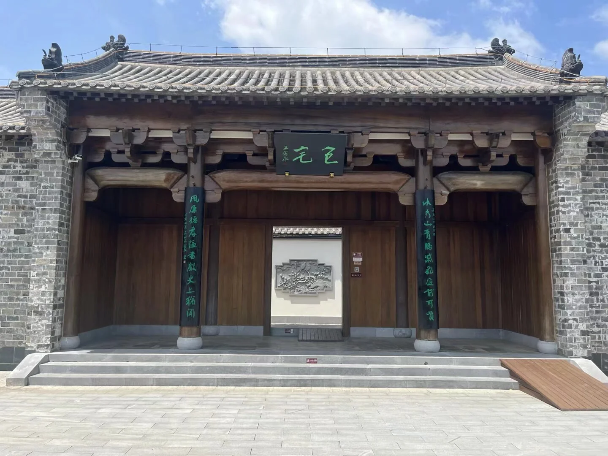
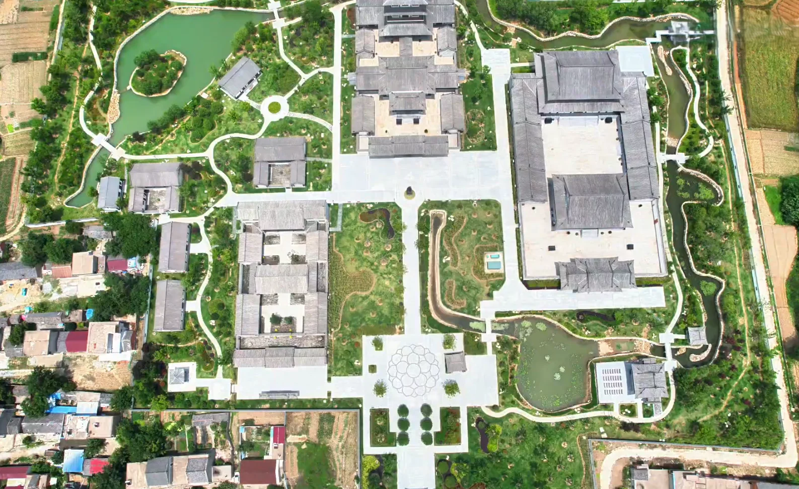
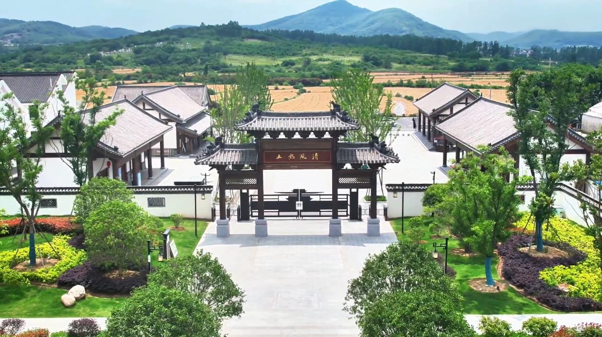
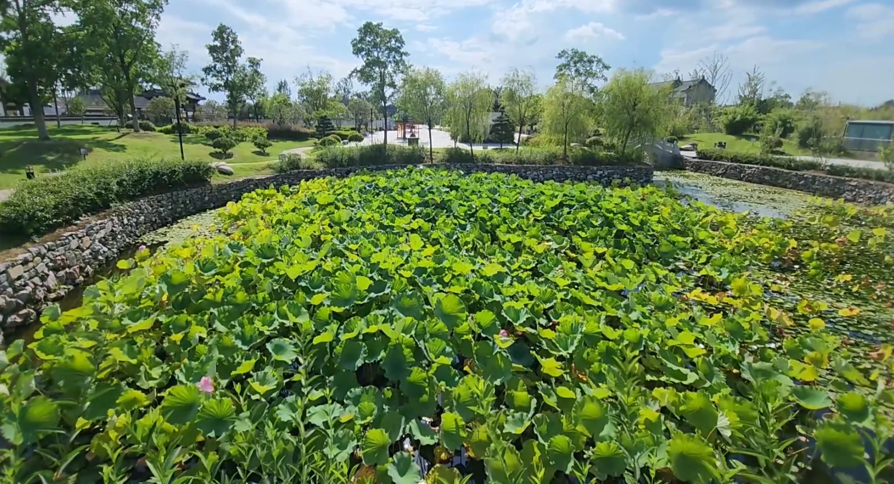
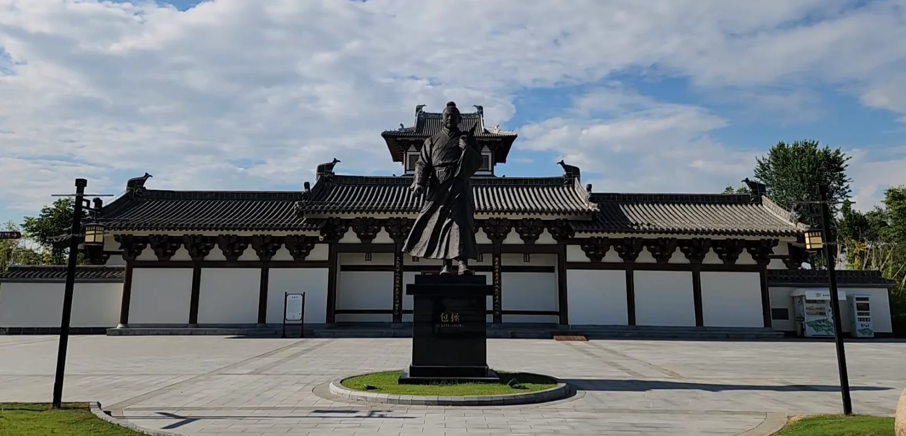

SCENIC OVERVIEW
一园阅千年，一步见清风
文化园于2023年正式开园，核心园区约5.1万平方米，主要由包公故居、孝肃阁、包公书院、廉苑、包林等文化空间组成，并串联花园井、荷花塘、戏台、亭廊等景观。
园区以“世界包公·故里肥东”为文化主题，将人物生平、家风孝道、清廉为政、法治精神和后世传播融入建筑与展陈之中。2025年，包公故里景区获评国家AAAA级旅游景区。
4A国家级旅游景区
5主要文化部分
360°VR数字游览

CULTURAL SPIRIT
孝 · 廉 · 智 · 正 · 忠
园区以五个关键词提炼包公精神，并通过不同建筑与展陈空间展开叙事。
孝
奉养双亲、重视家风，体现个人品格的根基。
廉
严于律己、公私分明，反对贪赃枉法。
智
体察民情、务实理政，善于解决实际问题。
正
不畏权贵、秉公执法，维护制度与公平。
忠
忠于职守、敢于进谏，以国家和百姓为念。
SELECTED IMAGES
影像园区
航拍、建筑、展陈与园林共同构成园区的视觉叙事。

园区入口与山水环境包宅门厅
孝肃阁
 包公书院
包公书院
荷塘景观
包公塑像
SCENIC NEWS
查看全部动态
园区动态
及时了解园区活动、节庆展演、文创上新和包公文化专题内容。
活动资讯
从节庆活动到文化展演，从园区文创到主题研学，这里记录包公故里文化园的最新变化与精彩瞬间。